Create the project and get the data
Create a new uv project as in Week 4. ifcopenshell reads BIM files (IFC), and viser shows a 3D scene built in Python in your browser.
uv init --python 3.12 --no-package facility-twin
cd facility-twin
uv add ifcopenshell viser pandas numpy plotly matplotlibDownload this week's data inside the project folder:
curl -L -o week11_data.zip https://mugojames254.github.io/smart_facility_coursework/week11_data.zip
tar -xf week11_data.zipcurl.exe -L -o week11_data.zip https://mugojames254.github.io/smart_facility_coursework/week11_data.zip
tar -xf week11_data.zipcurl -L -o week11_data.zip https://mugojames254.github.io/smart_facility_coursework/week11_data.zip
unzip week11_data.zip| building_twin.ifc | The BIM model of a 5-floor research institute with 82 rooms (IFC4, 11 MB). Based on KIT's open sample model; for this class we added 2 air handling units (AHU-1, AHU-2), their zones and 253 sensors. |
| rooms_ko.csv | Our facility team's data: Korean name, use, area, facade and AHU for each room. Linked to the IFC by room number. |
| sensors.csv | The BMS point list, 261 points: point name (e.g. AHU2.R203.ZN-T), room, quantity, unit, IFC GlobalId. |
| readings.csv | The BMS export, about 350,000 rows: every point every 15 minutes, 7–20 September 2026. |
| weather.csv | The real Suwon weather for the same two weeks (Open-Meteo). |
| complaints.csv | 36 complaints (KakaoTalk, web, phone). An empty closed_at means the ticket is still open. |
The building model and the weather are real. The sensor values and complaints are teaching data from a physics simulation driven by the real room sizes, window directions, Suwon weather and usage schedules, so the numbers behave plausibly, but no real person wrote these complaints. A few problems are hidden in the data for you to find.
Your project folder has a data folder with the six files above plus a README.md.
Open the BIM model: floors, rooms, sensors, AHUs
A Week 4 point cloud was only points; a Week 5 mesh was only triangles. BIM is different: everything in an IFC file is an object with a type — a wall is an IfcWall, a room is an IfcSpace, a sensor is an IfcSensor — and objects are linked: building → floor → room → sensors in the room. So an IFC file is a 3D model and, at the same time, a database of the building.
import ifcopenshell
import ifcopenshell.util.element as ue
import pandas as pd
model = ifcopenshell.open("data/building_twin.ifc")
print("Schema:", model.schema)
# 1. The spatial tree: building -> storeys -> spaces (rooms)
for storey in model.by_type("IfcBuildingStorey"):
spaces = [s for s in ue.get_decomposition(storey) if s.is_a("IfcSpace")]
print(f"{storey.Name:16s} elevation {storey.Elevation:5.1f} m {len(spaces):2d} rooms")
# 2. How many of each element? (BIM = objects with a type, not just triangles)
for cls in ["IfcWall", "IfcDoor", "IfcWindow", "IfcFurnishingElement",
"IfcUnitaryEquipment", "IfcSensor"]:
print(f"{cls:22s} {len(model.by_type(cls))}")
# 3. One room: its IFC attributes, and what is inside it
room = next(s for s in model.by_type("IfcSpace") if s.Name == "203")
print("\nRoom", room.Name, "|", room.LongName, "| GlobalId", room.GlobalId)
for el in sorted(ue.get_contained(room), key=lambda e: e.Name):
print(" contains", el.is_a(), el.Name, ue.get_pset(el, "SFM_Sensor", "Unit"))
# 4. Air handling units and the rooms they serve (IfcZone groups)
for zone in model.by_type("IfcZone"):
rooms = sorted(r.Name for r in zone.IsGroupedBy[0].RelatedObjects)
print(f"\n{zone.Name}: {len(rooms)} rooms, e.g. {rooms[:8]}")
# 5. Join our own facility data (Korean names) on the room number
ifc_rooms = pd.DataFrame([{"room": s.Name, "name_ifc": s.LongName, "guid": s.GlobalId}
for s in model.by_type("IfcSpace")])
ours = pd.read_csv("data/rooms_ko.csv", dtype={"room": str})
rooms = ifc_rooms.merge(ours[["room", "floor", "name_ko", "use", "area_m2", "facade", "ahu"]], on="room")
print()
print(rooms[rooms.floor == "2F"].sort_values("room").head(8).to_string(index=False))$ uv run explore_ifc.py
Schema: IFC4
Keller elevation -3.0 m 17 rooms
Erdgeschoss elevation 0.0 m 18 rooms
1. Obergeschoss elevation 3.0 m 22 rooms
2. Obergeschoss elevation 6.0 m 22 rooms
Dachgeschoss elevation 9.0 m 3 rooms
IfcWall 121
IfcDoor 77
IfcWindow 206
IfcFurnishingElement 253
IfcUnitaryEquipment 2
IfcSensor 253
Room 203 | Buero Mueller VIII + IX | GlobalId 0UiHARbFzF1RT4g_GKem_B
contains IfcSensor AHU2.R203.ZN-CO2 ppm
contains IfcSensor AHU2.R203.ZN-OCC persons
contains IfcSensor AHU2.R203.ZN-RH %RH
contains IfcSensor AHU2.R203.ZN-T degC
AHU-1 공조구역: 35 rooms, e.g. ['001', '002', '003', '004', '005', '006', '007', '008']
AHU-2 공조구역: 44 rooms, e.g. ['201', '202', '203', '204', '205', '206', '207', '208']
room name_ifc guid floor name_ko use area_m2 facade ahu
201 Buero Obermueller 0uC7OD3$5F7v$zL3aaoEig 2F 교수실 office 24.6 S AHU-2
202 Buero Mueller VI + VII 3shuyF_Yb7yu2P$QLB2s8G 2F 교수실 office 25.5 S AHU-2
203 Buero Mueller VIII + IX 0UiHARbFzF1RT4g_GKem_B 2F 교수실 office 25.5 S AHU-2
204 Buero Oberschmitt 1yZQvqj15Ab8eMXDuz85Dy 2F 교수실 office 25.5 S AHU-2
205 Buero Schmitt II 3iSzpa9d93jhTDB7hG0QBW 2F 교수실 office 12.3 S AHU-2
206 Buero IL Sekr. 2goaA6RR92B9xducYbaQVU 2F 행정실 admin 25.5 S AHU-2
207 Buero IL 24vVAUYDH2SetutQQsZBMv 2F 연구소장실 office 37.8 S AHU-2
208 Buero Schmied II 2E2TaOnqD0chpbuH8tXCpW 2F 교수실 office 11.4 N AHU-2| by_type | Gets every object of one type. model.by_type("IfcSensor") = all 253 sensors. |
| get_contained | The objects inside a room (or floor). Room 203 holds four sensors. |
| IfcZone | A group of rooms — here, "the rooms one AHU cools". We will need this to find the cause later. |
| merge(on="room") | Joins the IFC room numbers with our own facility table. This is the heart of a digital twin: linking different data on the same key. |
- Change
"203"to"006". What is the seminar room called in the IFC, and which sensors does it have? - Print the two units in
model.by_type("IfcUnitaryEquipment")and useue.get_container(...)to find which room each one stands in.
See the building in 3D (viser)
IFC walls, doors and windows are stored as rules for making a shape ("a wall 20 cm thick and 2.7 m high"). ifcopenshell.geom turns those rules into the triangle meshes you met in Week 5. This module groups the meshes by floor and by kind (walls, windows, doors…) so we can show one floor at a time. We will reuse it later.
"""Turn the IFC model into triangle meshes, grouped so the viewer can show one floor at a time."""
import multiprocessing
import numpy as np
import ifcopenshell
import ifcopenshell.geom
import ifcopenshell.util.element as ue
FLOORS = {"Keller": "B1", "Erdgeschoss": "1F", "1. Obergeschoss": "2F",
"2. Obergeschoss": "3F", "Dachgeschoss": "4F"}
# element class -> (group name, colour, opacity)
STYLE = {
"IfcWall": ("wall", (226, 221, 212), 1.0),
"IfcSlab": ("slab", (190, 186, 178), 1.0),
"IfcRoof": ("roof", (150, 92, 76), 1.0),
"IfcWindow": ("window", (140, 190, 225), 0.45),
"IfcDoor": ("door", (140, 105, 75), 1.0),
"IfcStair": ("stair", (170, 165, 155), 1.0),
"IfcStairFlight": ("stair", (170, 165, 155), 1.0),
"IfcRailing": ("stair", (90, 90, 90), 1.0),
"IfcFurnishingElement": ("furniture", (205, 170, 115), 1.0),
"IfcUnitaryEquipment": ("equipment", (235, 120, 40), 1.0),
}
SKIP = ("IfcOpeningElement", "IfcSite", "IfcSpace", "IfcSensor", "IfcAnnotation")
def storey_of(element):
"""The storey an element belongs to (elements inside a room -> that room's storey)."""
parent = ue.get_container(element) or ue.get_aggregate(element)
while parent is not None and not parent.is_a("IfcBuildingStorey"):
parent = ue.get_container(parent) or ue.get_aggregate(parent)
return FLOORS.get(parent.Name, "?") if parent is not None else "?"
def merge(parts):
"""Join many (vertices, faces) pairs into one mesh."""
verts, faces, offset = [], [], 0
for v, f in parts:
verts.append(v)
faces.append(f + offset)
offset += len(v)
return np.vstack(verts).astype(np.float32), np.vstack(faces).astype(np.uint32)
def load_building(path="data/building_twin.ifc"):
"""Returns (groups, rooms, sensors).
groups : {(floor, group): (vertices, faces, colour, opacity)} - walls, doors, ... merged per floor
rooms : {room number: {"floor", "vertices", "faces"}} - one mesh per IfcSpace
sensors: {point id: (x, y, z)} - centre of each IfcSensor
"""
model = ifcopenshell.open(path)
settings = ifcopenshell.geom.settings()
settings.set("use-world-coords", True) # every vertex in building coordinates (metres)
parts, rooms, sensors = {}, {}, {}
iterator = ifcopenshell.geom.iterator(settings, model, multiprocessing.cpu_count())
if iterator.initialize():
while True:
shape = iterator.get()
el = model.by_id(shape.id)
v = np.array(shape.geometry.verts).reshape(-1, 3)
f = np.array(shape.geometry.faces).reshape(-1, 3)
if len(f):
if el.is_a("IfcSpace"):
rooms[el.Name] = {"floor": storey_of(el), "vertices": v.astype(np.float32),
"faces": f.astype(np.uint32)}
elif el.is_a("IfcSensor"):
sensors[el.Name] = tuple(v.mean(axis=0))
elif not el.is_a() in SKIP:
key = next((c for c in STYLE if el.is_a(c)), None)
group, colour, opacity = STYLE[key] if key else ("other", (180, 180, 180), 1.0)
parts.setdefault((storey_of(el), group, colour, opacity), []).append((v, f))
if not iterator.next():
break
groups = {}
for (floor, group, colour, opacity), p in parts.items():
v, f = merge(p)
if (floor, group) in groups: # e.g. stairs and railings share a group
v0, f0, c0, o0 = groups[(floor, group)]
v, f = merge([(v0, f0), (v, f)])
groups[(floor, group)] = (v, f, colour, opacity)
return groups, rooms, sensors
if __name__ == "__main__":
import time
t0 = time.time()
groups, rooms, sensors = load_building()
print(f"{len(groups)} mesh groups, {len(rooms)} rooms, {len(sensors)} sensors in {time.time() - t0:.1f} s")
for (floor, group), (v, f, _, _) in sorted(groups.items()):
print(f" {floor} {group:10s} {len(f):6d} triangles")$ uv run twin_geometry.py
29 mesh groups, 82 rooms, 253 sensors in 1.8 s
1F door 936 triangles
1F furniture 912 triangles
1F other 248 triangles
1F slab 80 triangles
1F stair 1017 triangles
...Now show it with viser. viser starts a small web server from Python and sends the 3D scene and the controls to your browser. Each room (IfcSpace) gets its own mesh so that it can be clicked.
import time
import pandas as pd
import viser
from twin_geometry import load_building
groups, rooms, sensors = load_building("data/building_twin.ifc")
info = pd.read_csv("data/rooms_ko.csv", dtype={"room": str}).set_index("room")
server = viser.ViserServer()
server.scene.set_up_direction("+z")
server.scene.configure_environment_map(environment_intensity=0.5) # softer light, truer colours
@server.on_client_connect
def start_view(client): # look at the building from the south-east, from above
client.camera.position = (37.0, -16.0, 19.0)
client.camera.look_at = (23.0, 8.0, 0.0)
# 1. The building: one mesh per (floor, element group)
building = {}
for (floor, group), (v, f, colour, opacity) in groups.items():
building[(floor, group)] = server.scene.add_mesh_simple(
f"/building/{floor}/{group}", v, f, color=colour, opacity=opacity, flat_shading=True)
# 2. The rooms: one clickable mesh per IfcSpace
room_mesh = {}
for room, r in rooms.items():
v = r["vertices"].copy()
v[:, 2] = v[:, 2].clip(max=v[:, 2].min() + 2.5) # stop just under the ceiling
room_mesh[room] = server.scene.add_mesh_simple(
f"/rooms/{room}", v, r["faces"], color=(90, 160, 220), opacity=0.35)
# 3. The side panel
floor_pick = server.gui.add_dropdown("Floor", ("All", "B1", "1F", "2F", "3F", "4F"), initial_value="2F")
panel = server.gui.add_markdown("Click a room.")
def show_floor(_=None):
fl = floor_pick.value
for (floor, group), h in building.items():
h.visible = (fl == "All") or (floor == fl and group != "roof")
for room, h in room_mesh.items():
h.visible = (fl == "All") or rooms[room]["floor"] == fl
floor_pick.on_update(show_floor)
show_floor()
def make_click(room):
def on_click(event):
r = info.loc[room]
panel.content = (f"### {room}호 · {r.name_ko}\n"
f"IFC name: *{r.name_ifc}* \n"
f"Floor **{r.floor}** · {r.area_m2} m² · facade {r.facade} · {r.ahu}")
for name, h in room_mesh.items():
h.color = (240, 90, 60) if name == room else (90, 160, 220)
return on_click
for room, h in room_mesh.items():
h.on_click(make_click(room))
print("Open http://localhost:8080 in your browser. Ctrl+C to stop.")
while True:
time.sleep(10)uv run view_building.py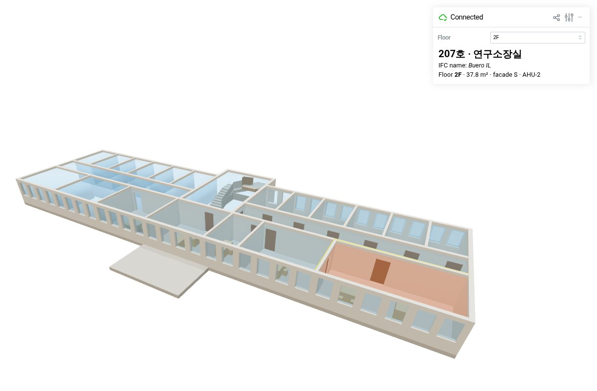
The second floor appears in your browser. Rotate with left-drag, pan with right-drag, zoom with the wheel. Click a room: it turns orange and the panel shows its details. Pick other floors in Floor.
Stop a program with Ctrl+C in the terminal. If you start another viser program while one is still running, port 8080 is taken and viser prints a different address such as 8081; open the address the terminal shows. The viser panel is shared by all browser tabs: change the floor in one tab and every tab follows.
Read the sensor data: which rooms were too warm or too stuffy?
A BMS (building management system) usually exports one reading per row: time, point, value. The point name is an address: AHU2.R203.ZN-T = AHU-2 zone, room 203, zone temperature. To analyse it we pivot to a table with one column per point.
import matplotlib
matplotlib.use("Agg")
import matplotlib.pyplot as plt
import pandas as pd
rooms = pd.read_csv("data/rooms_ko.csv", dtype={"room": str})
sensors = pd.read_csv("data/sensors.csv", dtype={"room": str})
readings = pd.read_csv("data/readings.csv", parse_dates=["timestamp"])
weather = pd.read_csv("data/weather.csv", parse_dates=["timestamp"])
print(f"{len(readings):,} readings from {readings.point_id.nunique()} points, "
f"{readings.timestamp.min()} to {readings.timestamp.max()}")
# 1. Long format (one row per reading) -> wide (one column per point)
wide = readings.pivot(index="timestamp", columns="point_id", values="value")
print(wide.shape, "(time steps x points)")
# 2. One room over two weeks, next to the weather
fig, ax = plt.subplots(figsize=(13, 4.5))
ax.plot(weather.timestamp, weather.temp_c, color="0.6", lw=1, label="outdoor (Suwon)")
for pid, colour in [("AHU2.R203.ZN-T", "tab:red"), ("AHU2.R210.ZN-T", "tab:blue"),
("AHU1.R102.ZN-T", "tab:green")]:
ax.plot(wide.index, wide[pid], color=colour, lw=1.2, label=pid)
ax.axhline(26, color="k", ls=":", lw=1)
ax.set_ylabel("°C")
ax.set_title("Room temperature, 7–20 Sep 2026")
ax.legend(loc="upper left", ncol=4, fontsize=9)
fig.tight_layout()
fig.savefig("room_temperatures.png", dpi=110)
print("saved room_temperatures.png")
# 3. Comfort check: during working hours, how long was each room too warm or too stuffy?
work = wide[(wide.index.day_of_week < 5) & (wide.index.hour >= 9) & (wide.index.hour < 18)]
rows = []
for room, pts in sensors[sensors.ifc_class == "IfcSensor"].groupby("room"):
q = dict(zip(pts.quantity, pts.point_id))
if "co2" not in q: # only rooms where people work
continue
rows.append({"room": room,
"hours_over_26C": (work[q["temperature"]] > 26).sum() / 4, # 4 readings per hour
"hours_over_1000ppm": (work[q["co2"]] > 1000).sum() / 4,
"max_temp": work[q["temperature"]].max(),
"max_co2": work[q["co2"]].max()})
comfort = pd.DataFrame(rows).merge(rooms[["room", "name_ko", "floor", "facade", "ahu"]], on="room")
print("\nToo warm (hours over 26 °C in working hours):")
print(comfort.sort_values("hours_over_26C", ascending=False).head(10).to_string(index=False))
print("\nToo stuffy (hours over 1000 ppm CO2 in working hours):")
print(comfort.sort_values("hours_over_1000ppm", ascending=False).head(5).to_string(index=False))$ uv run sensor_data.py
349,107 readings from 261 points, 2026-09-07 00:00:00 to 2026-09-20 23:45:00
(1344, 261) (time steps x points)
saved room_temperatures.png
Too warm (hours over 26 °C in working hours):
room hours_over_26C hours_over_1000ppm max_temp max_co2 name_ko floor facade ahu
302 11.50 0.0 29.5 930.0 연구실 3F S AHU-2
205 11.25 0.0 28.7 700.0 교수실 2F S AHU-2
307 10.25 0.0 29.9 960.0 연구실 3F S AHU-2
203 10.25 0.0 28.7 695.0 교수실 2F S AHU-2
201 10.00 0.0 28.8 705.0 교수실 2F S AHU-2
306 10.00 0.0 29.5 940.0 연구실 3F S AHU-2
305 10.00 0.0 29.2 940.0 연구실 3F S AHU-2
301 10.00 0.0 29.7 955.0 연구실 3F S AHU-2
207 9.75 0.0 28.4 840.0 연구소장실 2F S AHU-2
303 9.75 0.0 29.3 950.0 연구실 3F S AHU-2
Too stuffy (hours over 1000 ppm CO2 in working hours):
room hours_over_26C hours_over_1000ppm max_temp max_co2 name_ko floor facade ahu
105 0.0 27.00 25.3 1170.0 대학원생실 1 1F S AHU-1
006 0.0 11.00 25.6 1580.0 세미나실 B1 NS AHU-1
002 0.0 7.25 25.7 1210.0 회의실 2 B1 S AHU-1
001 0.0 3.25 26.0 1200.0 회의실 1 B1 S AHU-1
010 0.0 0.00 25.4 715.0 실험실 B1 B1 N AHU-1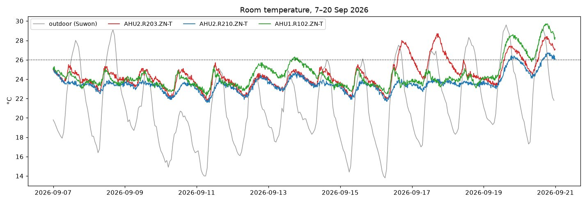
- The ten warmest rooms are all south-facing and all AHU-2. Coincidence?
- The stuffiest room is 105, a graduate student office. Is the air really bad there, or is something wrong with the sensor? We check in step 6.
Find the room in each complaint
Complaints are free text. To put them on the twin we need to know which room each one is about. We start with simple rules: look for a number like "203호"; if there is none, look for a room name that exists only once, such as "세미나실"; failing that, keep just the floor, such as "3층".
import re
import pandas as pd
rooms = pd.read_csv("data/rooms_ko.csv", dtype={"room": str})
# Room names that point to exactly one room ("세미나실" -> 006). "교수실" is used 20 times, so it is left out.
counts = rooms.name_ko.value_counts()
UNIQUE_NAMES = {name: room for name, room in zip(rooms.name_ko, rooms.room) if counts[name] == 1}
UNIQUE_NAMES.update({"로비": "117", "서버실": "007", "실험실 B3": "012"})
FLOOR_WORDS = {"지하": "B1", "1층": "1F", "2층": "2F", "3층": "3F", "4층": "4F"}
def locate(text):
"""Find (room, floor) in a complaint. room is None when only the floor is known."""
m = re.search(r"(\d{3})호", text) # "203호" -> 203
if m and m.group(1) in set(rooms.room):
room = m.group(1)
else:
room = next((r for name, r in UNIQUE_NAMES.items() if name in text), None)
if room:
return room, rooms.set_index("room").floor[room]
floor = next((fl for word, fl in FLOOR_WORDS.items() if word in text), None)
return None, floor
if __name__ == "__main__":
tickets = pd.read_csv("data/complaints.csv", parse_dates=["received", "closed_at"])
tickets[["room", "floor"]] = tickets.text.apply(lambda t: pd.Series(locate(t)))
pd.set_option("display.width", 160)
print(tickets[["id", "received", "room", "floor", "status", "text"]].to_string(index=False))
print("\nNo room found:", tickets.room.isna().sum(), "of", len(tickets))
print("\nTickets per room:")
per_room = tickets.dropna(subset=["room"]).groupby("room").size().sort_values(ascending=False)
print(per_room.head(8).to_string())
# Which tickets were open at one moment? received <= t and (not closed yet or closed after t)
t = pd.Timestamp("2026-09-17 15:00")
open_now = tickets[(tickets.received <= t) & (tickets.closed_at.isna() | (tickets.closed_at > t))]
print(f"\nOpen at {t}: {len(open_now)} tickets ->", sorted(open_now.room.dropna()))
tickets.to_csv("complaints_located.csv", index=False)$ uv run complaints_rooms.py
...
C036 2026-09-20 16:40:00 012 B1 open 지하 실험실 B3 냉장고 알람이 울려요.
No room found: 4 of 36
Tickets per room:
room
006 6
105 2
203 2
012 1
007 1
106 1
112 1
113 1
Open at 2026-09-17 15:00:00: 15 tickets -> ['006', '006', '006', '006', '105', '201', '203', '204', '206', '207', '302', '305', '306', '310']C024, "세미나실은 괜찮은데 2층만 올라오면 너무 더워요" ("the seminar room is fine, but upstairs on 2F it's far too hot"), is about the second floor, yet the rule saw "세미나실" and assigned it to room 006. Rules see words, not meaning. The Week 9 LLM triage could read a sentence like this correctly.
- Open
complaints_located.csvand read the 4 tickets with no room. Where would a person send them? - Challenge (optional): add a
room: str | Nonefield to the pydantic model in Week 9'striage.pyand let gemma3 extract the room. Does it get C024 right?
Build the digital twin
Now put it all together: the building from step 2, the sensors from step 3 and the complaints from step 4, joined on the room number, with each room coloured by its value. Move the time slider and the building replays its two weeks.
import time
import matplotlib
import numpy as np
import pandas as pd
import plotly.graph_objects as go
import viser
from complaints_rooms import locate
from twin_geometry import load_building
# ------------------------------------------------------------------ 1. load everything, join on room number
groups, room_geo, sensor_pos = load_building("data/building_twin.ifc")
rooms = pd.read_csv("data/rooms_ko.csv", dtype={"room": str}).set_index("room")
points = pd.read_csv("data/sensors.csv", dtype={"room": str})
readings = pd.read_csv("data/readings.csv", parse_dates=["timestamp"])
wide = readings.pivot(index="timestamp", columns="point_id", values="value")
times = wide.index
tickets = pd.read_csv("data/complaints.csv", parse_dates=["received", "closed_at"])
weather = pd.read_csv("data/weather.csv", parse_dates=["timestamp"])
tickets[["room", "floor"]] = tickets.text.apply(lambda t: pd.Series(locate(t)))
# room -> its point id for each quantity, e.g. point_of["203"]["temperature"] = "AHU2.R203.ZN-T"
point_of = {r: dict(zip(p.quantity, p.point_id))
for r, p in points[points.ifc_class == "IfcSensor"].groupby("room")}
# what the colours mean: (quantity, low, high, matplotlib colour map, legend text)
LAYERS = {
"Temperature (°C)": ("temperature", 22, 29, "RdYlBu_r", "blue = 22 °C, red = 29 °C or more"),
"CO2 (ppm)": ("co2", 400, 1400, "YlOrRd", "yellow = 400 ppm, dark red = 1400 ppm or more"),
"Open tickets": ("tickets", 0, 3, "Purples", "white = none, light purple = 1, dark purple = 3 or more"),
}
NO_SENSOR, NO_DATA = (200, 200, 200), (70, 70, 70)
def open_tickets(t):
return tickets[(tickets.received <= t) & (tickets.closed_at.isna() | (tickets.closed_at > t))]
def ticket_status(ticket, t):
if ticket.received > t:
return "not yet"
return "open" if pd.isna(ticket.closed_at) or ticket.closed_at > t else "closed"
def room_value(room, layer, t):
qty = LAYERS[layer][0]
if qty == "tickets":
return float((open_tickets(t).room == room).sum())
pid = point_of.get(room, {}).get(qty)
if pid is None or rooms.use[room] in ("plant", "server"):
return None # no such sensor, or not a room people work in
return wide.at[t, pid] # NaN when the sensor sent nothing
def colour_of(value, layer):
if value is None:
return NO_SENSOR
if np.isnan(value):
return NO_DATA
_, lo, hi, cmap, _ = LAYERS[layer]
x = np.clip((value - lo) / (hi - lo), 0, 1)
if cmap == "Purples": # tickets: 0 stays white, 1 is already clearly purple
x = 0.0 if value == 0 else 0.45 + 0.55 * x
r, g, b, _ = matplotlib.colormaps[cmap](x)
return int(r * 255), int(g * 255), int(b * 255)
# ------------------------------------------------------------------ 2. the 3D scene
server = viser.ViserServer()
server.scene.set_up_direction("+z")
server.scene.configure_environment_map(environment_intensity=0.5) # softer light, truer colours
server.gui.configure_theme(control_width="large")
@server.on_client_connect
def start_view(client):
client.camera.position = (40.0, -23.0, 25.0)
client.camera.look_at = (27.0, 8.0, 0.0)
building = {key: server.scene.add_mesh_simple(f"/building/{key[0]}/{key[1]}", v, f, color=c,
opacity=o, flat_shading=True)
for key, (v, f, c, o) in groups.items()}
room_mesh, room_label = {}, {}
for room, g in room_geo.items():
v = g["vertices"].copy()
v[:, 2] = v[:, 2].clip(max=v[:, 2].min() + 2.5)
room_mesh[room] = server.scene.add_mesh_simple(f"/rooms/{room}", v, g["faces"], flat_shading=True)
room_label[room] = server.scene.add_label(f"/labels/{room}", room,
position=(*v[:, :2].mean(axis=0), v[:, 2].max() + 0.2))
sensor_dots = server.scene.add_point_cloud("/sensors", np.array(list(sensor_pos.values()), np.float32),
colors=(20, 20, 20), point_size=0.12, visible=False)
# ------------------------------------------------------------------ 3. the side panel
days = sorted({t.strftime("%Y-%m-%d %a") for t in times})
with server.gui.add_folder("View"):
floor_pick = server.gui.add_dropdown("Floor", ("All", "B1", "1F", "2F", "3F"), initial_value="All")
layer_pick = server.gui.add_dropdown("Colour by", tuple(LAYERS), initial_value="Temperature (°C)")
zone_pick = server.gui.add_dropdown("AHU zone", ("-", "AHU-1", "AHU-2"), initial_value="-")
show_sensors = server.gui.add_checkbox("Show sensors", False)
with server.gui.add_folder("Time"):
day_pick = server.gui.add_dropdown("Day", tuple(days), initial_value="2026-09-17 Thu")
hour_pick = server.gui.add_slider("Time of day", 0, 23.75, 0.25, initial_value=15.5)
play = server.gui.add_button("▶ Play / pause")
clock = server.gui.add_markdown("")
legend = server.gui.add_markdown("")
title = server.gui.add_markdown("**Click a room.**")
ticket_box = server.gui.add_markdown("")
chart = server.gui.add_plotly(go.Figure(), aspect=1.6, visible=False)
state = {"room": None, "playing": False}
def now():
t = pd.Timestamp(day_pick.value[:10]) + pd.Timedelta(hours=hour_pick.value)
return times[times.get_indexer([t], method="nearest")[0]]
def refresh(_=None):
t, layer, fl, zone = now(), layer_pick.value, floor_pick.value, zone_pick.value
if state["room"] and fl != "All" and room_geo[state["room"]]["floor"] != fl:
state["room"] = None # the selected room is not on this floor
for (floor, group), h in building.items():
h.visible = fl != "All" and floor == fl
for room, h in room_mesh.items():
floor = room_geo[room]["floor"]
h.visible = (fl == "All" and floor != "4F") or floor == fl
room_label[room].visible = floor == fl or room == state["room"]
h.color = colour_of(room_value(room, layer, t), layer)
in_zone = zone == "-" or rooms.ahu[room] == zone
h.opacity = None if in_zone else 0.08 # None = solid
sensor_dots.visible = show_sensors.value
clock.content = f"### {t:%Y-%m-%d %a %H:%M}"
legend.content = (f"**{layer}**: {LAYERS[layer][4]} \n"
f"light grey = not monitored · dark grey = no data")
if state["room"]:
show_room(state["room"])
elif zone != "-":
show_ahu(zone)
else:
title.content, ticket_box.content, chart.visible = "**Click a room.**", "", False
def show_room(room):
t, r = now(), rooms.loc[room]
lines = [f"### {room}호 · {r.name_ko}",
f"{r.floor} · {r.area_m2} m² · facade {r.facade} · {r.ahu} · IFC *{r.name_ifc}*"]
for qty, label, unit in [("temperature", "temperature", " °C"), ("co2", "CO2", " ppm"),
("humidity", "humidity", " %"), ("occupancy", "people counted", "")]:
pid = point_of.get(room, {}).get(qty)
if pid:
lines.append(f"- {label}: **{wide.at[t, pid]:g}{unit}** `{pid}`")
title.content = "\n".join(lines)
fig = go.Figure()
pts = point_of.get(room, {})
if layer_pick.value.startswith("CO2") and "co2" in pts:
fig.add_scatter(x=times, y=wide[pts["co2"]], name=f"{room} CO2 (ppm)", line=dict(color="#e6550d"))
fig.add_hline(y=1000, line=dict(color="black", dash="dash", width=1))
elif "temperature" in pts:
fig.add_scatter(x=weather.timestamp, y=weather.temp_c, name="outdoor (°C)",
line=dict(color="#aaaaaa", width=1))
fig.add_scatter(x=times, y=wide[pts["temperature"]], name=f"{room} (°C)", line=dict(color="#d62728"))
style_chart(fig, t)
mine = tickets[tickets.room == room]
ticket_box.content = "**Tickets** \n" + ("\n".join(
f"- {x.received:%m-%d %H:%M} · *{ticket_status(x, t)}* · {x.text}" for x in mine.itertuples()) or "none")
def show_ahu(ahu):
a = ahu.replace("-", "")
served = rooms[rooms.ahu == ahu]
title.content = (f"### {ahu} · 공조기\nServes {len(served)} rooms on "
f"{', '.join(sorted(served.floor.unique()))} \n"
f"- supply air: **{wide.at[now(), a + '.SAT']:g} °C** (setpoint 14 °C)\n"
f"- chilled-water valve: **{wide.at[now(), a + '.CHW-VLV']:g} %**")
fig = go.Figure()
fig.add_scatter(x=times, y=wide[a + ".SAT"], name="supply air °C", line=dict(color="#1f77b4"))
fig.add_scatter(x=times, y=wide[a + ".RAT"], name="return air °C", line=dict(color="#d62728"))
fig.add_scatter(x=times, y=wide[a + ".CHW-VLV"], name="valve (%)", yaxis="y2",
line=dict(color="rgba(120,120,120,0.5)", width=1))
style_chart(fig, now())
ticket_box.content = ""
def style_chart(fig, t):
fig.add_vline(x=t, line=dict(color="black", dash="dot"))
fig.update_layout(margin=dict(l=10, r=10, t=10, b=10), legend=dict(orientation="h", y=1.12),
yaxis2=dict(overlaying="y", side="right", showgrid=False),
xaxis=dict(tickformat="%d %b"))
chart.figure = fig
chart.visible = True
def make_click(room):
def on_click(event):
state["room"] = room
refresh()
return on_click
for room, h in room_mesh.items():
h.on_click(make_click(room))
def zone_changed(_):
state["room"] = None
refresh()
def toggle_play(_):
state["playing"] = not state["playing"]
for control in (floor_pick, layer_pick, show_sensors, day_pick, hour_pick):
control.on_update(refresh)
zone_pick.on_update(zone_changed)
play.on_click(toggle_play)
refresh()
print("Digital twin running: open http://localhost:8080 (Ctrl+C to stop)")
while True:
time.sleep(0.4)
if state["playing"]: # one hour per tick; roll over to the next day
h = hour_pick.value + 1
if h > 23.75:
i = days.index(day_pick.value)
day_pick.value = days[(i + 1) % len(days)]
h = 0.0
hour_pick.value = huv run twin_app.py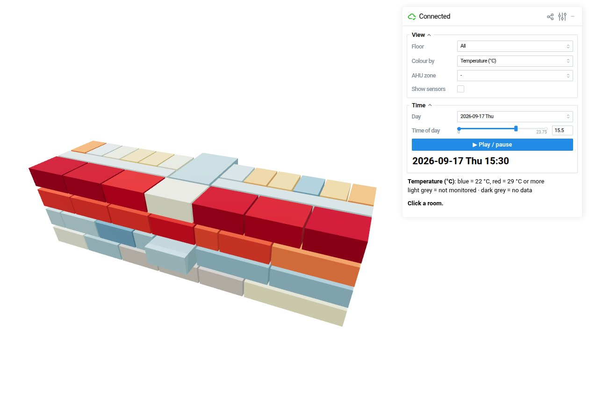
| Floor | All = the whole building (rooms only); B1–3F = that floor with its walls, doors, windows and room numbers. |
| Colour by | Temperature, CO2, or the number of tickets open at that moment. |
| AHU zone | Shows only the rooms one AHU serves, plus that AHU's supply-air and valve chart. |
| Day · Time of day | The moment to show. ▶ Play / pause runs one hour every 0.4 seconds. |
| click a room | Its sensor values at that moment, its tickets, and a two-week chart (dotted line = the current time). |
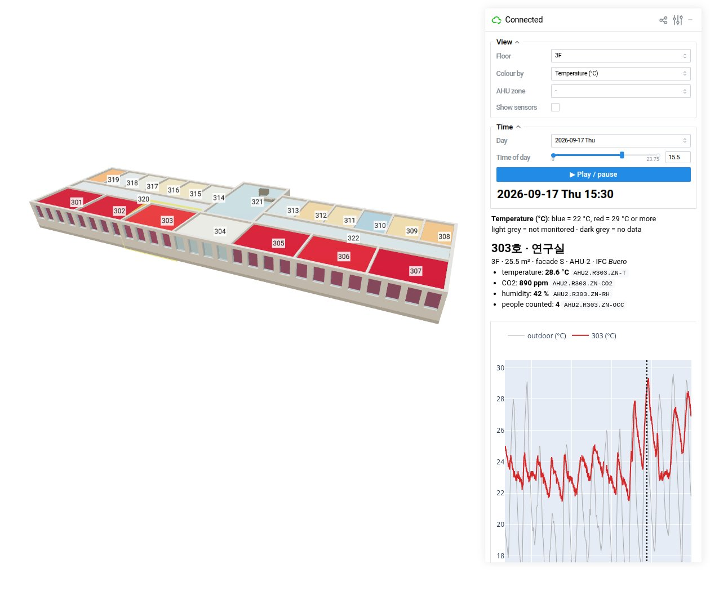
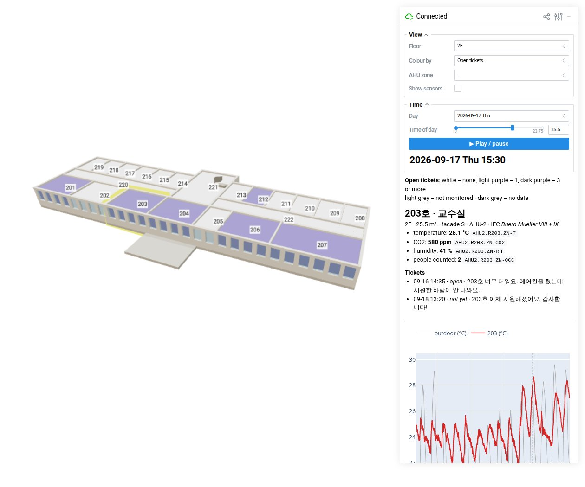
The first view matches the picture above (17 September, 15:30), and clicking a room shows its values, tickets and chart. Press ▶ Play: the clock runs and the rooms change colour. Do B1 and 1F stay blue?
Start-up takes 5–10 seconds while it reads the IFC and 350,000 rows. Refresh the browser after the terminal prints Digital twin running. On a slow laptop, pick a single floor in Floor; it is much lighter.
Find the faults automatically
Look around 16–17 September and room 310 in the twin (try AHU zone = AHU-2), then turn what you see into rules.
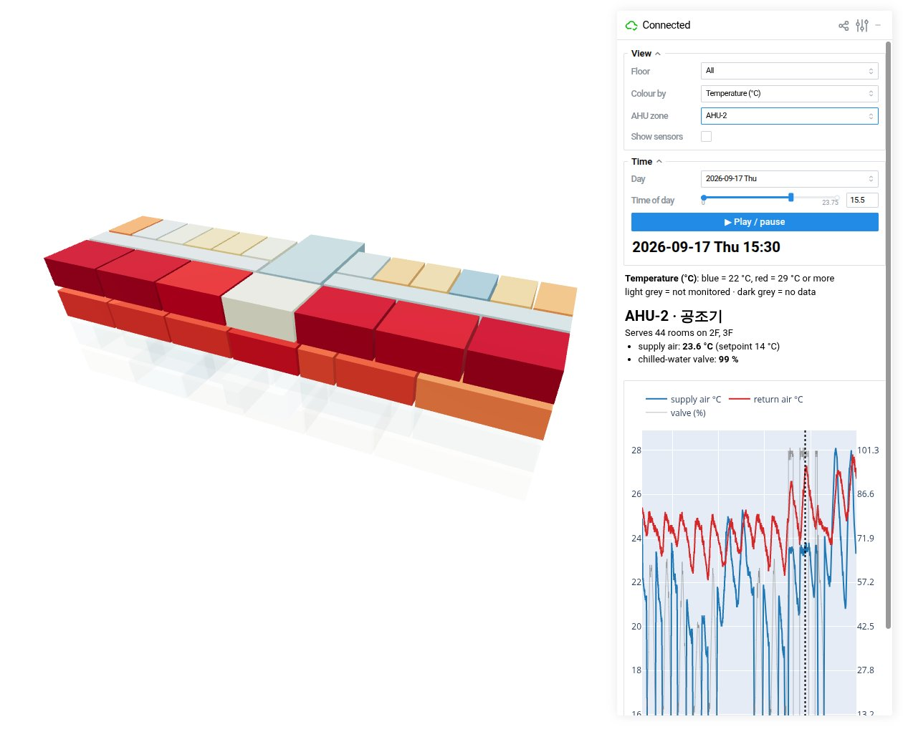
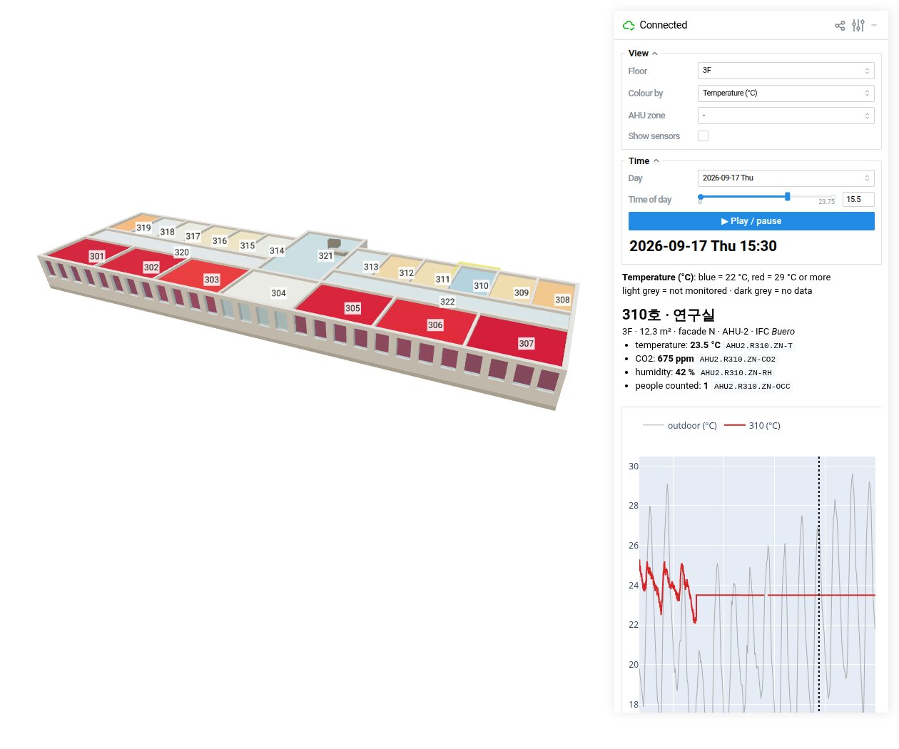
Anything you find by eye in the twin can be turned into a rule and checked automatically every day. Real fault detection and diagnostics (FDD) software runs hundreds of rules like these.
import numpy as np
import pandas as pd
from complaints_rooms import locate
rooms = pd.read_csv("data/rooms_ko.csv", dtype={"room": str}).set_index("room")
sensors = pd.read_csv("data/sensors.csv", dtype={"room": str})
readings = pd.read_csv("data/readings.csv", parse_dates=["timestamp"])
wide = readings.pivot(index="timestamp", columns="point_id", values="value")
full = pd.date_range(wide.index.min(), wide.index.max(), freq="15min")
wide = wide.reindex(full) # missing readings become NaN
def periods(mask, min_steps=2):
"""Turn a True/False series into (start, end) periods that last at least min_steps readings."""
out, start, n = [], None, 0
for t, on in mask.items():
if on:
start, n = (t if start is None else start), n + 1
else:
if start is not None and n >= min_steps:
out.append((start, prev))
start, n = None, 0
prev = t
if start is not None and n >= min_steps:
out.append((start, prev))
return out
# 1. Rule-based fault detection on the AHUs:
# fan on + valve almost fully open + supply air still warm = the coil is not cooling
print("1. AHU rule: fan on AND valve >= 95 % AND supply air > 18 °C for 30 min or more")
for ahu in ["AHU1", "AHU2"]:
rule = (wide[f"{ahu}.SF-STS"] == 1) & (wide[f"{ahu}.CHW-VLV"] >= 95) & (wide[f"{ahu}.SAT"] > 18)
found = periods(rule, min_steps=2)
print(f" {ahu}: {len(found)} periods", *[f"\n {a:%a %d %H:%M} -> {b:%a %d %H:%M}" for a, b in found])
# 2. Stuck sensors: a temperature that does not change at all for 12 hours or more
print("\n2. Stuck sensors (same temperature for 12 h or more)")
for pid in [c for c in wide if c.endswith("ZN-T")]:
same = wide[pid].ffill().diff().abs() < 1e-9 # ffill: a gap in the data is not a change
longest = max(periods(same, 1), key=lambda p: p[1] - p[0], default=None)
if longest and longest[1] - longest[0] >= pd.Timedelta(hours=12):
print(f" {pid}: {wide[pid][longest[0]]} °C from {longest[0]:%a %d %H:%M} to {longest[1]:%a %d %H:%M}")
# 3. Gaps: when did many sensors go silent at the same time?
print("\n3. Data gaps (time steps where more than 20 points sent nothing)")
missing = wide.isna().sum(axis=1)
for a, b in periods(missing > 20, 1):
silent = wide.loc[a].index[wide.loc[a].isna()]
rooms_silent = sorted({p.split(".")[1][1:] for p in silent if ".R" in p})
print(f" {a:%a %d %H:%M} -> {b:%H:%M}: {missing[a]} points, rooms {rooms_silent[0]}…{rooms_silent[-1]}")
# 4. Drift: at night (03-05 h) every room is empty, so CO2 should fall back to outdoor air (~420 ppm)
print("\n4. CO2 drift (night-time minimum rising by more than 8 ppm per day)")
night = wide[(wide.index.hour >= 3) & (wide.index.hour < 5)]
for pid in [c for c in wide if c.endswith("ZN-CO2")]:
daily_min = night[pid].resample("D").min().dropna()
slope = np.polyfit(np.arange(len(daily_min)), daily_min.to_numpy(), 1)[0]
if slope > 8:
print(f" {pid}: +{slope:.0f} ppm/day, night minimum {daily_min.iloc[0]:.0f} -> {daily_min.iloc[-1]:.0f} ppm")
# 5. Do the complaints agree? Tickets received while the AHU-2 rule was firing (+ 1 day after)
tickets = pd.read_csv("data/complaints.csv", parse_dates=["received", "closed_at"])
tickets[["room", "floor"]] = tickets.text.apply(lambda t: pd.Series(locate(t)))
rule2 = periods((wide["AHU2.SF-STS"] == 1) & (wide["AHU2.CHW-VLV"] >= 95) & (wide["AHU2.SAT"] > 18), 2)
start, end = rule2[0][0], rule2[-1][1] + pd.Timedelta(days=1)
during = tickets[(tickets.received >= start) & (tickets.received <= end)]
in_zone = during.room.map(lambda r: rooms.ahu.get(r, "?") if isinstance(r, str) else "?")
print(f"\n5. {len(during)} tickets between {start:%a %d %H:%M} and {end:%a %d %H:%M}; "
f"AHU of their rooms: {in_zone.value_counts().to_dict()}")$ uv run find_faults.py
1. AHU rule: fan on AND valve >= 95 % AND supply air > 18 °C for 30 min or more
AHU1: 0 periods
AHU2: 3 periods
Wed 16 13:15 -> Wed 16 20:45
Thu 17 07:00 -> Thu 17 20:45
Fri 18 07:00 -> Fri 18 10:30
2. Stuck sensors (same temperature for 12 h or more)
AHU2.R310.ZN-T: 23.5 °C from Thu 10 09:30 to Sun 20 23:45
3. Data gaps (time steps where more than 20 points sent nothing)
Mon 14 10:00 -> 14:15: 75 points, rooms 301…322
4. CO2 drift (night-time minimum rising by more than 8 ppm per day)
AHU1.R105.ZN-CO2: +21 ppm/day, night minimum 395 -> 670 ppm
5. 18 tickets between Wed 16 13:15 and Sat 19 10:30; AHU of their rooms: {'AHU-2': 14, 'AHU-1': 3, '?': 1}| 1 · AHU-2 | Chilled-water valve stuck, Wed 16 13:15 until the repair on Fri 18 10:30. The south rooms on 2F/3F overheated and the complaints piled up. |
| 2 · 310 | Temperature sensor stuck at 23.5 °C. The room is hot, but the BMS thinks it is fine. The most dangerous faults are the quiet ones. |
| 3 · 3F | No data from all of 3F on Mon 14, 10:00–14:15: a network outage (ticket C011, "the internet was down"). It shows dark grey in the twin. |
| 4 · 105 | CO2 sensor drifting up about 20 ppm a day. Room 105, the "stuffiest room" in step 3, is really a sensor problem. It needs recalibration. |
| + · 006 | The seminar room hits 1500 ppm CO2 during the big Tue/Thu lecture (about 55 people), but its ventilation was designed for 30. This is not a fault; it is a design/operation problem. See it with Colour by = CO2 on 15 September at 14:30. |
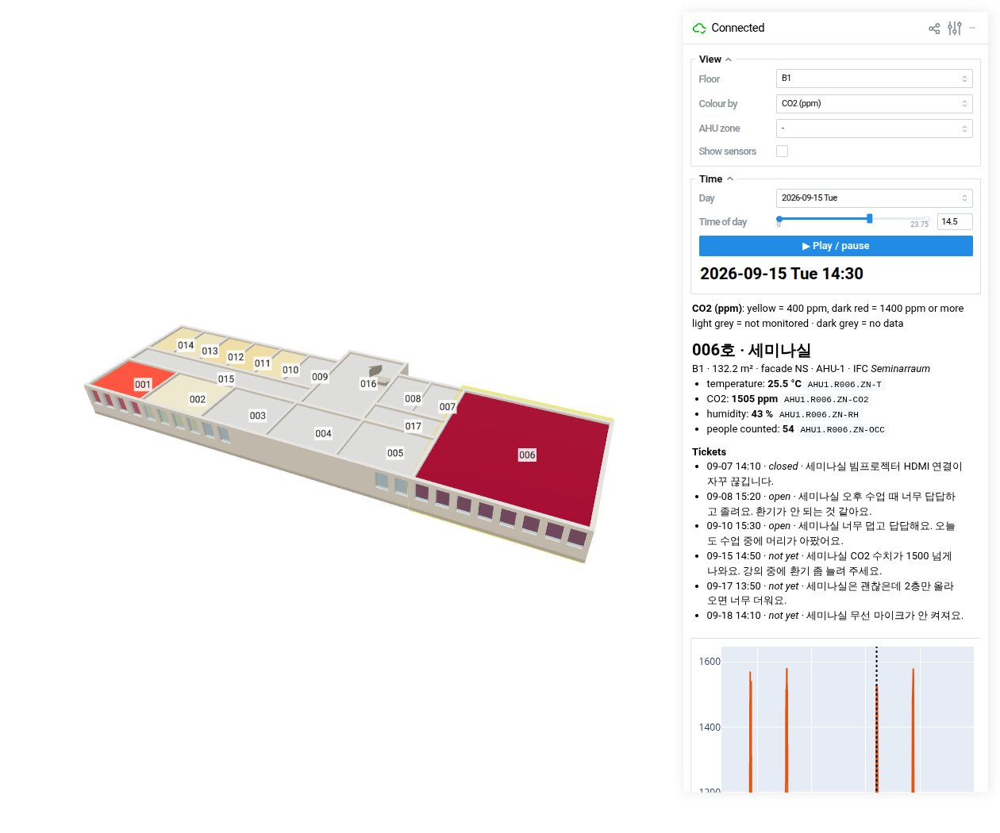
The twin shows what any single source misses. The complaints alone say "it's hot here and there"; the sensors alone are "lots of numbers"; the BIM alone is "82 rooms". The moment you join them on room number and AHU zone, one cause appears: AHU-2's valve. A digital twin is not a pretty 3D model; it is joined-up data.
- Add a rule to
find_faults.py: "a room being cooled during working hours with nobody in it" (wasted energy). - Add a Humidity layer to the twin (one line in
LAYERS). What happens to humidity during the fault? - Challenge (optional): give the Week 9 agent a
get_room_status(room)tool and ask it "why are there so many complaints from 203?"
Extra practice: ask the twin with a local LLM
In Week 9 you ran gemma3:4b on your own laptop with Ollama. Now we connect that model to the twin as a chat assistant. Type "take me to the hottest room on 3F" and the twin opens that floor, selects and highlights the room, and flies the camera to it by itself.
How does it work? The LLM never sees the sensor values. The work is split:
- The LLM turns your question into one fixed
Command(JSON), the same pydantic +format=trick as the Week 9 agent. - pandas finds and ranks the rooms in the data, at the time on the slider.
- viser picks the floor, highlights the room and glides the camera there with
client.camera.
Why split it? A 4B model cannot reliably compare the numbers of 80 rooms, and it will confidently make up an answer. The LLM understands the question; the code takes the numbers from the data. So every value in the answer is real.
| find_room | The highest or lowest room by temperature, CO2, humidity, people, open tickets, or alarm time (time today above 26 °C or 1000 ppm). E.g. "which room has the most faults?", "2층에서 제일 답답한 방은?" |
| go_to_room | Go to one room, by number or by name (names are found with locate from step 4). E.g. "303호 보여 줘", "show me 세미나실" |
| show_ahu | An AHU's zone and its supply-air and valve chart. E.g. "what is wrong with AHU-2?" |
| reset_view | Back to the whole building. E.g. "show the whole building" |
| answer | Greetings and "what can you do?": a short reply, nothing moves. |
Before you start: Ollama must be running and ollama list must show gemma3:4b (if not, run ollama pull gemma3:4b). Then add the ollama library to the project:
uv add ollamaThe code is long (about 430 lines), so this time you download the file instead of copying it. It is twin_app.py from step 5 plus a new part 4, the AI assistant. It uses twin_geometry.py (step 2) and complaints_rooms.py (step 4), so save it in the same project folder.
Or from the command line, inside the project folder:
curl -L -o twin_chat.py https://mugojames254.github.io/smart_facility_coursework/code/week11/twin_chat.pycurl.exe -L -o twin_chat.py https://mugojames254.github.io/smart_facility_coursework/code/week11/twin_chat.pycurl -L -o twin_chat.py https://mugojames254.github.io/smart_facility_coursework/code/week11/twin_chat.pyuv run twin_chat.pyA floating Assistant window sits at the bottom left (drag it anywhere). Type a question and press Ask. The LLM command line under the answer is the command the model produced, so you see exactly what it understood.
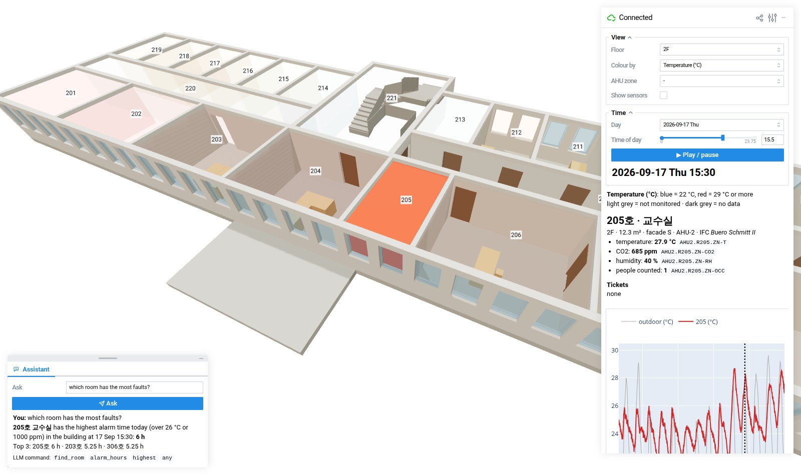
find_room alarm_hours highest.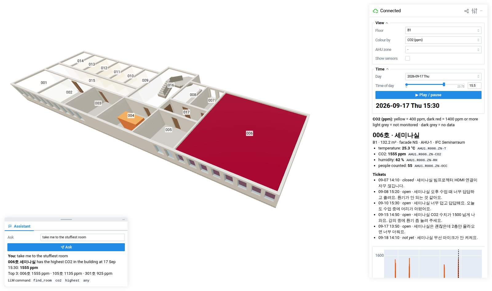
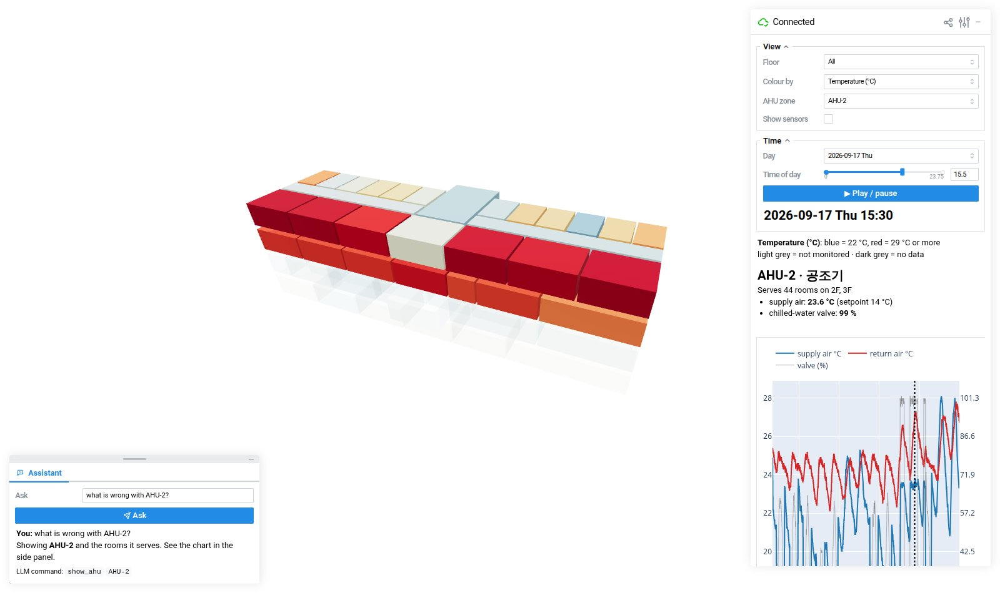
Without changing the time (17 September, 15:30), ask which room has the most faults?: you get 205, 6 h, and the camera goes to 2F. Ask in Korean too: 3층에서 제일 더운 방 보여줘 → 301, 29.2 °C.
⚠ ConnectionErrorinstead of an answer → Ollama is not running. Start it and press Ask again.model "gemma3:4b" not found→ runollama pull gemma3:4b.- The first question takes about 10 seconds while the model loads; after that, usually 2–5 seconds on a laptop.
- It goes to the wrong place → read the LLM command line: the model misread the question. Adding that question as one line under
Examplesin theSYSTEMprompt usually fixes it.
- In part 4, find five things:
Command(what the LLM may choose),SYSTEM(rules and examples),ask_llm,rank_rooms(where the numbers come from) andfly_to(the camera). - Add a new metric: "the biggest room" (
rooms.area_m2). You need to change three places:Command,METRICSandvalue_now. - Challenge: let users ask about a time too, e.g. "the hottest room yesterday at 3 pm". Add
dayandhourtoCommandand move the sliders.